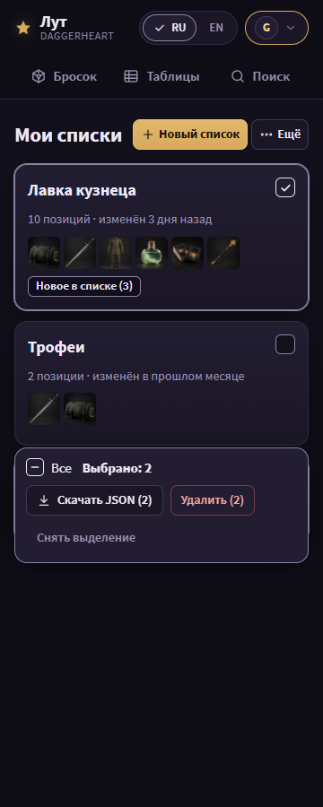
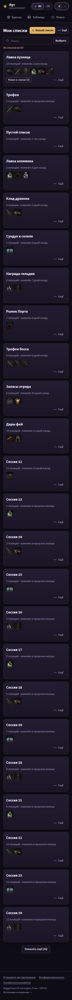
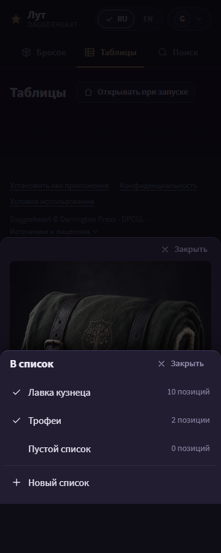

Batch 8 - lists page, list cards, lists import, add-to-list menu
This page shows the batch 8 mock (the lists page /lists, its cards, the
lists import, the list-not-found page and the add-to-list menu) for the owner to confirm
before the implementer starts. Round 3 applies the owner's answers, the first-screen
rule (plan.md section 14) and plan review plan-1-3.
Open a state at state.html?s=<state>&lang=en. Renders:
<state>__<width>__<lang>.png, 60 PNGs at 360 and 1180 px,
RU and EN. Shared code in ../direction/ is read-only; u.js,
u.css and the copies base.css, r.css are this
unit's.
Owner answers


First screen
The top of the primary content below the top of the header, at scroll 0, at 360x640 and
1180x720 (../measure.mjs's method; this unit's copy also measures the extra
states). Design target 240 / 270 px; the assert stays at 40%: 256 / 288 px (plan.md
section 14, plan review plan-1-3 R2). Green: at the target; gold: inside the limit, past
the target; red: past the limit.
| State | Primary content (EN / RU) | Controls above it (RU / EN) | 360 RU | 360 EN | 1180 RU | 1180 EN | Verdict |
|---|---|---|---|---|---|---|---|
lists-index |
first list card / «первая карточка списка» | «Мои списки» / "My lists", «Новый список» / "New list", «Ещё» / "More" | 231 | 231 | 189 | 189 | target |
lists-limit |
first list card / «первая карточка списка» | as lists-index, «Найти список» / "Find a list", «50 из 50» / "50 of 50" | 253 | 253 | 191 | 191 | limit only |
Changes in round 6 (reviews/mocks-2.md)
-
R0-2: the one selection bar (see its table): «Все», «Выбрано: N», «Скачать JSON (N)»,
«Удалить (N)», «Снять выделение» last;
lists-select-nonedraws the no-tick state. At 360 the bar pins to the bottom of a 640 px frame. -
N8-1: the «Новое в списке (3)» chip is neutral (Chalk text,
--muted2border); gold is for the primary only. N8-2:lists-limitdraws the first 24 cards and «Показать ещё (26)» as FEATURES "Lists" says (24 per page, 24 more per press).reviews/mocks-1.mdM8-1 asked for the rule 12 fold «и ещё N списков» in an earlier mock; the spec wins here, and the owner can ask for the fold wording instead. - N8-3: the new-list field has the visible label «Название списка» (rule 15a). N6-1: «+ Новый список» has the plus icon at every width; the 360 head spacing is tightened so «Мои списки», «+ Новый список» and «··· Ещё» stay on one row in RU. N0-3: no grab handle on any sheet.
-
Not fixed here, deferred-scope (N0-2):
lists-nopeandlists-signedoutkeep the error-page pattern of mock 4 (icon in a circle); the pattern belongs to unit A. - FEATURES change to name (owner, round 6): FEATURES "Lists" says the select-all box drops its visible label while anything is ticked; the owner kept «Все» visible while ticked, so batch 9 (and 6 and 8) writes that line as «Все» visible at every tick count, mixed state while some are ticked, accessible name «Выбрать все».
The selection bar at 360x640
The sticky bar, measured on the render (measure-bar.mjs): its height and
its share of the 640 px screen. The shape is the pattern of mock 3: «Все», «Выбрано: N»
with the facts of the page, the actions of the page, «Снять выделение» last; at 360 the
head takes its own row and the bar pins to the bottom of the frame.
| State | 360 RU | 360 EN | Share (RU) |
|---|---|---|---|
lists-selected |
129 px | 129 px | 20% |
lists-select-none |
129 px | 129 px | 20% |
Changes in round 5 (mock 3's list head pattern)
- Mock 3's final list head pattern: the title row holds «Мои списки», «Новый список» and «Ещё» (the import) at 360, «Импорт из файла» and «Новый список» at 1180; from the eighth list the search row is «Поиск» and «Выбрать» last; under eight lists the counter line ends with «Выбрать».
- At the limit the counter «50 списков из 50» stands at the head of the collection, under the search row at 360 and in it at 1180 (M8-1, FEATURES rule 1).
- One selection bar, sticky at the bottom of the list, «Снять выделение» last (M3-5).
Changes in round 4 (reviews/mocks-1.md)
- Review mocks-1 (round 4): the add-to-list sheet closes with «Закрыть» and counts in words («10 позиций») (M8-2).
- The fold reads «и ещё 38 списков» (M8-1, rule 12).
- A card links «Новое в списке (3)» to the list's panel (M8-3).
- The language switch shows its check and the footer keeps the DPCGL fold (X-3); the selection bar keeps «Снять выделение».
Changes in round 3
-
«Новый список» is the head primary and opens the name field in place (rule 8,
lists-new); the new-list panel is gone. - «Импорт из файла» moves into «Ещё» on the count line; at 360 «Ещё» also holds «Выбрать», at 1180 «Выбрать» sits beside the count, as the catalog (R3).
- At the limit the count turns red and «Новый список» stays on: its press says the limit and the next step, as today's toast does. From the eighth list the search takes the count line.
- The empty states draw the kind glyph well (a list glyph), not the "?" pedestal.
-
States removed: the question options; added:
lists-new,lists-more.
Differences from plan.md and from R
-
R's
lists-indexdrew the selection always on; here the cards have no tick until «Выбрать», so the mock splits it intolists-indexandlists-selected. - A card's red «Удалить» moves into a labelled «Ещё» menu (A16).
-
At 360 the add-to-list menu is its own sheet over the item sheet (C62). The item
sheet's bar at 360 is batch 4's (unit A
mocks/4/). - Question 8.1 was not in the plan: the plan placed help panels only in batches 3, 5 and 6.
Shared patterns and their owners
-
The empty-state pattern is batch 3 (
mocks/3/), the error-page pattern batch 4 (mocks/4/), the toast, the header and the account control batch 2 (mocks/2/), the type, the chips and the pressed default batch 1 (mocks/1/), all unit A. The list-page head pattern (the picker title, the search with «Фильтры», «Выбрать» in «Ещё» at 360 and in the search row at 1180) is the catalog's (mocks/3/). A state that uses one is re-rendered after its owner mock is confirmed. -
Ground: the linear page ground
linear-gradient(180deg, var(--bg2) 0, var(--bg) 520px)(owner, 2026-10-29). The no-picture well is the kind glyph; the "?" pedestal is gone (owner, 2026-10-29).
Impeccable critique
- P2: «Новый список» toasts the limit at 50 of 50 instead of being off; a disabled control would need its reason beside it, which costs a line in the first screen.
- P2, gold budget: gold on «Новый список», «Войти» and the lit account control only; the ticks and the selected cards are neutral (theme 1).
-
Detector (
impeccable detect, this folder): 0 slop warnings; 4design-system-fontwarnings (Source Sans 3, batch 1) and advisories from R's copied CSS.
States
Signed in, 3 lists: «Новый список» is the head primary (rule 8); the count line holds «Ещё» (at 360 «Выбрать» and the import, at 1180 the import, with «Выбрать» beside the count, as the catalog); no «Ваш аккаунт» heading (D116), no «Справка» (owner, 2026-10-29); cards with no red «Удалить» and no always-on tick; a card names waiting requests and changes. The account control is lit.



Open: the selection mode, 2 cards ticked. The one selection bar (mock 3): «Все» (three states), «Выбрано: 2», «Скачать JSON (2)», «Удалить (2)», «Снять выделение» last. At 360 it is pinned to the bottom of the 640 px frame. The ticks and the selected cards are neutral.



At the limit: 50 of 50 lists. The count «50 списков из 50» in red at the head of the collection; «Новый список» stays on and says the limit when pressed; the first 24 cards, then «Показать ещё (26)» (FEATURES "Lists", 24 per page); a search from the eighth list.



Open: the add-to-list menu: heading «Списки», a check mark (not gold fill) on the lists that hold the item, counts in words («10 позиций»), «Новый список»; it stays open for a second list. At 360 the menu is its own sheet over the item that closes with «Закрыть» (rule 11).